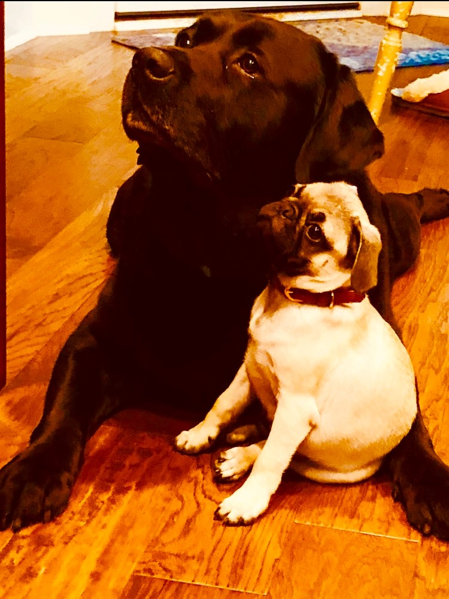

Often referred to as crumb snachers or
moochers we consider ourselves food connoisseurs. What can we say. We LOVE food! So it makes complete sense to
have a restaurant named after us. We taste test any and all food that hits the floor. No such thing as a 3-second
rule. Dewey's labrador nose gets the ingredients correct every time. If you don't like the food served
at our restaurant we will eat it ourselves. We will also make arrangements to get you to your doctor just to make
sure you are ok. Our personal attention includes sitting by your side and watching your every bite. We
want you to feel at home in our establishment.